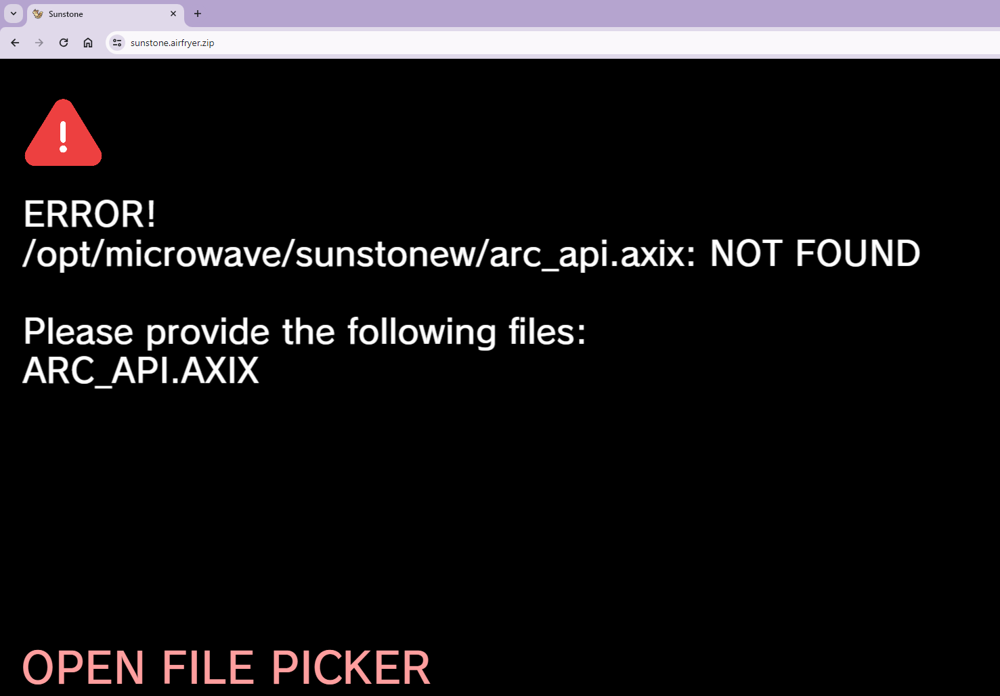

"arc_api.axix" is the compoment responsible for Air Fryer Wifi Connection and online play
When the game starts, it fetches the newest binary for Air Fryer Wifi Connection
Sometimes, games that use arc_api can fail to load beacuse arc_api was unable to be downloaded from the internet
This can be caused by a few diffrent things
1) a bad or weak internet connection
2) a old or outdated browser
3) a bad chrome extension, like theese:


if none of the above works, you can manually load the "arc_api.axix" file into the game by downloading it here